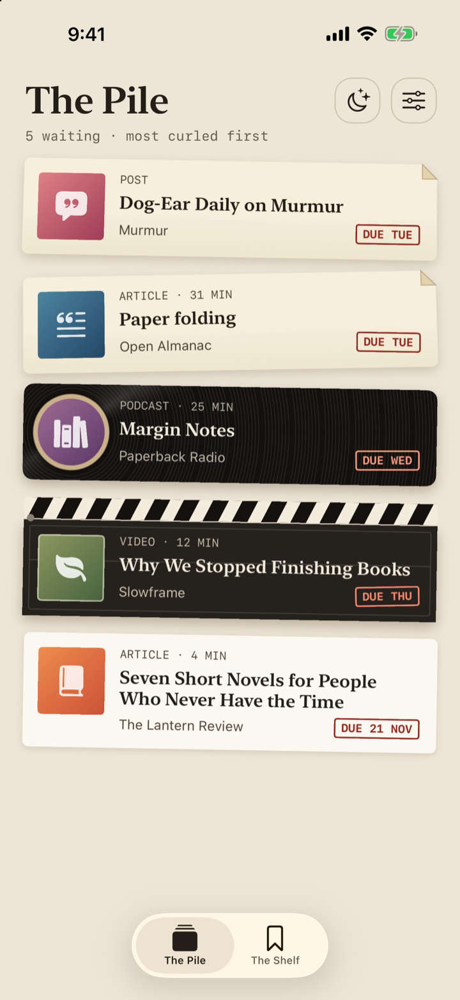

Private by construction
No account, no server, no third-party dependencies. Your links live on your phone, and nowhere else. Read the privacy policy.
A read-later app for iPhone
The read-later app with consequences.
You saved a link. You told yourself you'd read it later. Later is a lie. Pressed gives every link a deadline, and lets the ones you ignore wear out and crumble, so you actually get round to reading them.

Somewhere on your phone sits 10 Habits of Highly Productive People, saved eleven months ago by someone more optimistic than you. Beside it: Soup, But Complicated, a 94-part thread, and The Ultimate Guide to Guides, bookmarked in three apps and opened in none.
Other read-later apps keep these links forever, in a tidy list, with no hard feelings. A reading list that never judges you is just a very polite graveyard.
Pressed judges you. Gently.
No. 01 · Save
Tap Share, pick Pressed, done. It works from Safari and from any app that has a share button. No account to make, no server to wait for, no spinner to stare at while you reconsider your life.
No. 02 · Age
Every card on The Pile shows its age as the due date creeps closer, and wears a rubber stamp that says DUE TOMORROW, not no rush.
You decide how long a link lasts: 3, 7 or 14 days.
No. 03 · Press
Actually read one? Good for you. Add a one-line note about what stuck, then hold the button. A wax seal lands on the card with a haptic, and the link is kept for good. Go on, you've earned it.
No. 04 · Shelf
Everything you press hangs from The Shelf, one rail for every month of the year.
Open one again to see its title and the note you wrote, or go back and read the link once more.
No. 05 · Stack
Got a few minutes and a vague sense of guilt? Tell Pressed how long you have (5, 15 or 30 minutes, or any) and it picks about three cards by due date and a little variety, so tonight's reading is short enough to survive.
No. 06 · Consequences
Paper tears. Clapperboards snap. Records shatter. The fallen cards get flicked into the fireplace between two very full bookshelves, which is either poetic or passive-aggressive. You decide.
Is setting fire to your reading list the right way to motivate yourself? We genuinely aren't sure. It is, however, very satisfying.
Upcoming
With Focus mode on, the distracting apps you choose lock at a time you choose, and stay locked until you press one link from Tonight's stack. Then everything opens back up, and you've done the one thing.
It never locks you out when there's nothing to read, and there's always a "Not now" that gives you 15 minutes. We're strict, not cruel.
Focus mode only happens if you say so. Pressed asks for Screen Time permission first, you choose exactly which apps get locked, and you can switch it off in Settings whenever you like.
Focus mode is coming in version 1.1.
No account, no server, no third-party dependencies. Your links live on your phone, and nowhere else. Read the privacy policy.
Guilt at a glance. Open an expired link from the widget and it gets one last day. Once.
One reminder a day about links about to crumble, if you ask for it. Never when your pile is empty.
A card lasts through the whole of its last day, until 23:59:59. We're strict, not cruel.
Huge disclaimer. Pressed cannot force you to read. It only makes ignoring things visible, which is, historically, how most habits get fixed(?).